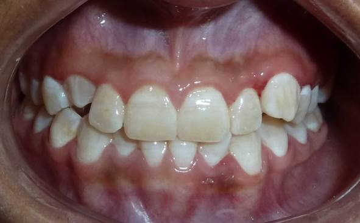
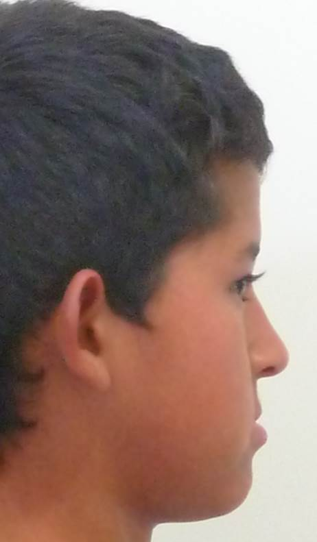

Dental view


CLINICAL CASE · DENTOFACIAL ORTHOPEDICS
A real dentofacial orthopedic case during growth. Treatment aims to improve jaw relationships and bite function according to the individual diagnosis.



TREATMENT DURING GROWTH
Dentofacial orthopedics can use growth stages to guide jaw development and promote a more functional bite. The indication, timing, and treatment goals depend on each patient’s clinical evaluation.
Images show a real clinical case. Results may vary according to clinical conditions, diagnosis, stage of growth, and each patient’s individual needs.